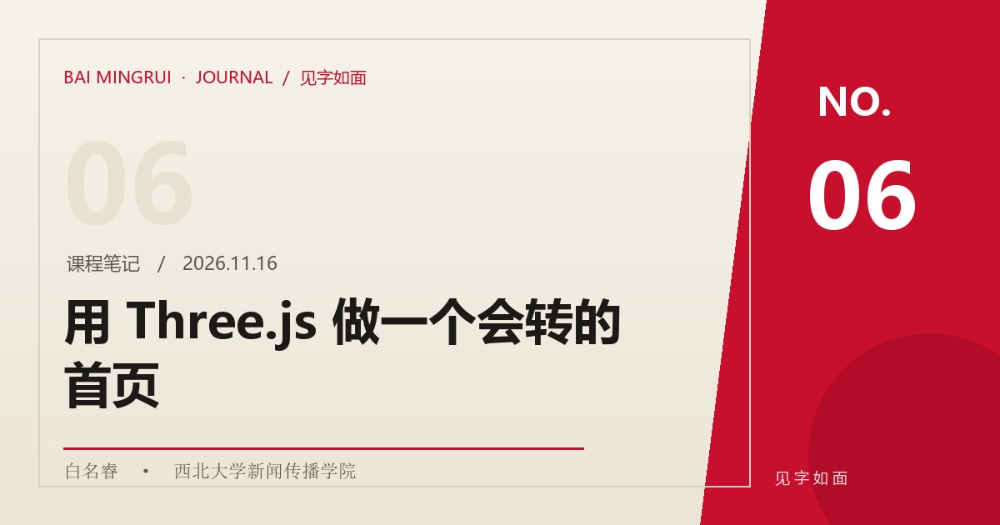

NO. 06 · 课程笔记
用 Three.js 做一个会转的首页
第 2 次作业做完之后，我删掉了原本想放的人物立牌。最后留在屏幕中央的，是一组会自转的几何体。

第 2 次作业的题目是「3D 交互个人主页」。我一开始想得特别具体：做一个人物立牌放在中间，最好还能换成游戏角色的 3D 形象。真动手之后才发现，这个方向既费时间，也不是我想要的——一个跟我本人不太像的虚拟人杵在首页，怎么看都有点别扭。
于是推倒重来，把「人」拿掉，让几何体自己说话。
先把场景搭起来
没有用前端框架，只引了一份放在本地的 three.min.js，一个 canvas 铺满整屏。相机摆在 (0, 1.2, 9)，一盏主光加一盏轮廓光，剩下的就是往场景里放东西：二十面体、圆环、八面体、环面纽结、立方体、圆柱，六个几何体散在四周，各自慢慢自转、上下浮动。
中间留了一个展示台：扁圆柱当底座，一圈发光的圆环，上方悬着多面体核心、线框护壳和两道交错的轨道。整个雕塑会自转、会浮沉，鼠标按住画布拖动，还能把它转一整圈。背景再撒 500 个白色粒子当星尘，亮度跟着时间轻微呼吸。
四个板块，四种颜色
页面左下角是信息区，用左右箭头或者键盘方向键切换：关于我、荣誉与经历、作品集、工具箱。每切一次，变的并不只是文字——画布里所有材质、线框、灯光和背景底色，都会一起过渡到新的主色：橙、红、青、黄。
「切换一个板块，等于换一整个房间的灯光。」
实现上其实不复杂：所有需要变色的材质在创建时统一收进一个数组，切换时把新的颜色一次性写进去，CSS 那边再让背景做 0.65 秒的缓动过渡，视觉上就联动起来了。
做完之后的一点体会
- 交互不一定要复杂。拖拽旋转 + 箭头切换 + 键盘方向键，三件事就够撑起一个页面。
- 3D 最容易翻车的是「太暗」。给核心材质加了自发光，才把雕塑从背景里拉出来。
- 留白比堆东西重要。拿掉人物之后，画面反而松了，信息区也更清楚。
顺手把这套配色和「不要人物立牌」的决定也带到了第 3 次作业里：那边是纸感浅色的传统博客，这边是会转的 3D 入口，两个站讲同一批内容，气质不一样。